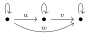

<!doctype html>
<html lang="en">

<head>
    <meta charset="utf-8">
    <meta name="author", content="Louis Dionne">
    <title>Théorie des catégories++</title>
    <link rel="stylesheet" href="css/reveal.min.css">
    <link rel="stylesheet" href="css/theme/default.css" id="theme">
    <link rel="stylesheet" href="lib/css/highlight/zenburn.css">
    <link rel="stylesheet" href="css/styles.css">
</head>

<body>
    <div class="reveal">
        <div class="slides">
            <section data-markdown=""
                     data-separator="^====+$"
                     data-vertical="^----+$"
                     data-notes="^Note:">
            <script type="text/template">

## Théorie des catégories++
### Louis Dionne

====================

## Plan de match
- Survol du système de typage du C++
- Introduction à la métaprogrammation en C++
- Introduction aux catégories
- __Fusion__!

<!-- On définit les commandes MathJax dans la 2eme slide pour éviter de
     les voir se loader lorsqu'on commence la présentation. -->

$\newcommand{\cc}[1]{{\tt #1}}$
$\newcommand{\sub}[1]{_{#1}}$
$\newcommand{\tp}[1]{<#1>}$

$\newcommand{\C}{\mathcal{C}}$
$\newcommand{\D}{\mathcal{D}}$
$\newcommand{\P}{\mathcal{P}}$
$\newcommand{\ob}{\mathrm{ob}}$
$\newcommand{\id}{\mathrm{id}}$
$\newcommand{\hom}{\mathrm{hom}}$

$\newcommand{\Set}{\mathrm{Set}}$
$\newcommand{\Grp}{\mathrm{Grp}}$
$\newcommand{\Top}{\mathrm{Top}}$
$\newcommand{\Cxx}{\mathrm{C++}}$
$\newcommand{\Hana}{\mathrm{Hana}}$
$\newcommand{\Id}{\mathrm{Id}}$

==============================================================================

### Qu'est-ce qu'un type?
En gros, c'est un ensemble de valeurs

$\cc{int} := \\{ -32 767, \dots, 32 767 \\}$
$\cc{string} := \\{\text{toutes les chaînes de caractères}\\}$

Note:
Ça permet au compilateur de connaître la représentation des objets
et de les stocker dans l'ordinateur.

----

### On doit spécifier le type des objets qu'on manipule

__Maths__
$$n := 33 \in {\cc{unsigned\ int}}$$
$$s := Bonjour \in \cc{string}$$

__C++__
```cpp
int n = 33;
string s = "Bonjour";
```

----

### On peut définir des fonctions

__Maths__
$$
    \begin{matrix}
        \cc{f} : \cc{int} \to \cc{int} \\\\
                       x  \mapsto x^2
    \end{matrix}
$$

__C++__
```cpp
auto f(int x) -> int {
    return x * x;
}
```

Note:
Cette fonction est en fait mal définie, parce que e.g.
$32767^2 \not\in \cc{int}$.

----

### En C++, on peut aussi définir nos propres types

```cpp
struct Personne {
    string nom;
    int age;
};

int main() {
    Personne john = {"John", 30};
}
```

====================

### Les templates

## Sauve qui peut! <!-- .element: class="fragment" -->

====================

### Sérieusement
#### Juste une famille de types indexés sur les types

$$
    \\{ \cc{X_T} = \cc{X\tp{T}} \\}\sub{\cc{T} \in \cc{Type}}
$$

```cpp
template <typename T>
struct X {
    // ...
};

X<int> i = {...};
X<string> s = {...};
```

----

#### Par exemple

$$
    \\{ \cc{list_T} = \cc{list\tp{T}} \\}\sub{\cc{T} \in \cc{Type}}
$$

```cpp
template <typename T>
struct list {
    // ...
};

list<int> ns = {0, 1, 2, 3, 4};
list<string> str = {"bonjour", "hello", "hola"};
```

====================

#### On a aussi des fonctions indexées sur les types

$$
    \\{ \cc{f_T} : \cc{A\tp{T}} \to \cc{B\tp{T}} \\}\sub{\cc{T} \in \cc{Type}}
$$

```cpp
template <typename T>
auto f(A<T> x) -> B<T> {
    // ...
}

A<int> x = {...};
A<string> y = {...};

f(x); // appelle f : A<int> -> B<int>
f(y); // appelle f : A<string> -> B<string>
```

----

#### Par exemple

$$
    \cc{at_T} : \cc{int} \times \cc{list\tp{T}} \to \cc{T}
$$

```cpp
template <typename T>
T at(int n, list<T> xs) {
    // ...
}

list<int> ns = {0, 1, 2, 3, 4};
int trois = at(3, ns);

list<string> str = {"bonjour", "hello", "hola"};
string hello = at(1, str);
```

==============================================================================

### Et la métaprogrammation dans tout ça?
#### Une famille indexée est une fonction sous le couvert... <!-- .element: class="fragment" -->

====================

### Les templates sont donc des fonctions sur les types

$$
    \begin{matrix}
        \\{ \cc{X\tp{T}} \\}\sub{\cc{T} \in \cc{Type}}  \\\\
                        \simeq                      \\\\
            \cc{X} : \cc{Type} \to \cc{Type}        \\\\
                       \cc{T} \to \cc{X\tp{T}}
    \end{matrix}
$$

----

### Observation analogue pour les fonctions

$$
    \begin{matrix}
        \\{ \cc{f_T} : \cc{A\tp{T}} \to \cc{B\tp{T}} \\}\sub{\cc{T} \in \cc{Type}}  \\\\
                            \simeq                                                  \\\\
            \cc{f} : \cc{Type} \to \left(\cc{A\tp{T}} \to \cc{B\tp{T}}\right)       \\\\
                        \cc{T} \mapsto \cc{f_T}
    \end{matrix}
$$

----

### Formalisation rigoureuse: types dépendants
#### Pas le temps :-( <!-- .element: class="fragment" -->

====================

### C'est ça qu'on manipule en métaprogrammation

====================

### Un exemple s'il vous plaît?

<!-- TODO -->

====================

### Mais à quoi ça sert?

- Analyse dimensionnelle
- Introspection
- Optimisations de haut niveau
- Parallélisation automatique
- $\infty$ d'exemples

==============================================================================

### La théorie des catégories

====================

### Une catégorie $\C$ est
#### 1. une collection d'objets $\ob(\C)$

</img>

<!-- TODO: Ajuster l'image -->

----

#### 2. une collection de morphismes $\hom(\C)$
$\hom(A, B)$ est la collection des morphismes de $A$ vers $B$

<!-- TODO: ajouter une image -->

----

#### 3. une loi de composition $\circ$

<!-- TODO: ajouter une image -->

====================

### $\C$ doit aussi respecter certaines règles
#### 1. tout objet $X$ a un morphisme identité $\id_X$ de $X$ vers lui-même

<!-- TODO: ajouter une image de morphisme identité -->

----

#### 2. les morphismes identité sont des éléments neutres de $\circ$

<!-- TODO: ajouter une image d'élément neutre -->

----

#### 3. la composition $\circ$ est associative

<!-- TODO: ajouter une image de composition associative -->

====================

### Exemples

----

#### $\Set$

- $\ob(\Set) = \\{ \text{ensembles} \\}$
- $\hom(X, Y) = \\{ \text{fonctions } f : X \to Y \\}$
- $\circ = \text{composition usuelle}$

----

#### $\Grp$

- $\ob(\Grp) = \\{ \text{groupes} \\}$
- $\hom(X, Y) = \\{ \text{homomorphismes } f : X \to Y \\}$
- $\circ = \text{composition usuelle}$

----

#### $\Top$

- $\ob(\Top) = \\{ \text{espaces topologiques} \\}$
- $\hom(X, Y) = \\{ \text{applications continues } f : X \to Y \\}$
- $\circ = \text{composition usuelle}$

----

#### $\Cxx$

- $\ob(\Cxx) = \\{ \text{types } \cc{T} \\}$
- $\hom(\cc{X}, \cc{Y}) = \\{ \text{fonctions } \cc{f} : \cc{X} \to \cc{Y} \\}$
- $\circ = \text{composition usuelle}$

Note:
Il faut se limiter aux fonctions pures et qui terminent.
Il faut aussi oublier `void` & al, mais tout ça est justifiable.

====================

### Les foncteurs
#### transformations entre catégories

----

### Un foncteur $F : \C \to \D$
#### 1. associe à chaque objet $X \in \ob(\C)$ un objet $F(X) \in \ob(\D)$

<!-- TODO: Image de foncteur -->

----

#### 2. associe à chaque morphisme $f : A \to B$ un morphisme $F(f) : F(A) \to F(B)$

<!-- TODO: Image de foncteur -->

----

#### 3. respecte les identités et la composition

$F(g \circ f) = F(g) \circ F(f)$

$F(\id_X) = \id\sub{F(X)}$

====================

### Exemples

----

#### Le foncteur identité $\Id : \C \to \C$

1. $\Id(X) = X$
2. $\Id(f : A \to B) = f : A \to B$

----

#### Le foncteur oubli $F : \Grp \to \Set$

1. $F(G) = G$
2. $F(f : G \to H) = f : G \to H$

<br>
(enlève la structure)

----

#### Le foncteur puissance $\P : \Set \to \Set$

1. $\P(X) = \text{ensemble puissance de } X$
2. $\P(f : A \to B) = f\sub{\star}$

<br>
où

$$
    \begin{matrix}
        f\sub{\star} : \P(A) \to \P(B)                                  \\\\
                   U \mapsto f(U)                                       \\\\
    \end{matrix}
$$

----

#### Le foncteur $\cc{list} : \Cxx \to \Cxx$

1. $\cc{list}(X) = \cc{list\tp{X}}$
2. $\cc{list}(\cc{f} : \cc{A} \to \cc{B}) = \cc{transform(-, f)}$

<br>
où

$$
    \begin{matrix}
        \cc{transform(-, f)} : \cc{list\tp{X}} \to \cc{list\tp{Y}}                  \\\\
                               \cc{[x1, ..., xn]} \mapsto \cc{[f(x1), ..., f(xn)]}  \\\\
    \end{matrix}
$$

==============================================================================

### Le plat de résistance
#### Les types généralisés

----

#### D'abord, on définit le template $\cc{type}$

$$
    \\{ \cc{type\tp{T}} \\}\sub{\cc{T} \in \cc{Type}}
$$

```cpp
template <typename T>
struct type { /* rien */ };
```

----

#### Ensuite, on se dote d'un type symbolique $\cc{Type}$

```cpp
struct Type { };
```

----

#### Finalement, on définit la (méta)fonction suivante
$$
    \begin{matrix}
        \cc{gtype} : \cc{Type} \to \cc{Type}    \\\\
                    \cc{T} \mapsto \cc{T}       \\\\
                    \cc{type\tp{T}} \mapsto \cc{Type}
    \end{matrix}
$$

====================

### La catégorie $\Hana$
#### (Hana = nom de la bibliothèque)

<!-- TODO -->

- $\ob(\Hana) = \cc{gtype}(\ob(\Cxx))$
- $\hom(\cc{X}, \cc{Y}) = \\{ \text{fonctions } \cc{f} : \cc{X} \to \cc{Y} \\}$
- $\circ = \text{composition usuelle}$

====================

### Applications

====================

### Foncteur $\cc{Maybe}$

====================

### Foncteur $\cc{Tuple}$

<!-- TODO -->

====================

### On a aussi des monades, des catamorphismes, etc...

====================

### Le résultat?

### Expressivité, généralité et rectitude

----

### Constatez par vous-même

#### Avant

```cpp
TODO
```

----

#### Après

```cpp
TODO
```

==============================================================================

## Merci

            </script>
            </section>
        </div>
    </div>


    <script src="lib/js/head.min.js"></script>
    <script src="js/reveal.min.js"></script>
    <script>
        Reveal.initialize({
            slideNumber: true,
            history: true,
            transition: 'slide',
            transitionSpeed: 'fast',

            dependencies: [
                { src: 'lib/js/classList.js', condition: function() { return !document.body.classList; } },
                { src: 'plugin/markdown/marked.js', condition: function() { return !!document.querySelector( '[data-markdown]' ); } },
                { src: 'plugin/markdown/markdown.js', condition: function() { return !!document.querySelector( '[data-markdown]' ); } },
                { src: 'plugin/highlight/highlight.js', async: true, callback: function() { hljs.initHighlightingOnLoad(); } },
                { src: 'plugin/notes/notes.js', async: true, condition: function() { return !!document.body.classList; } },
                { src: 'plugin/math/math.js', async: true }
            ]
        });
    </script>
</body>

</html>